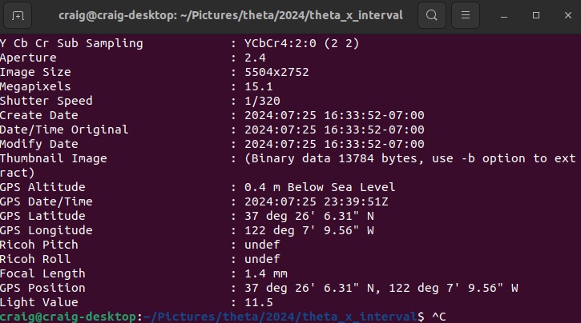
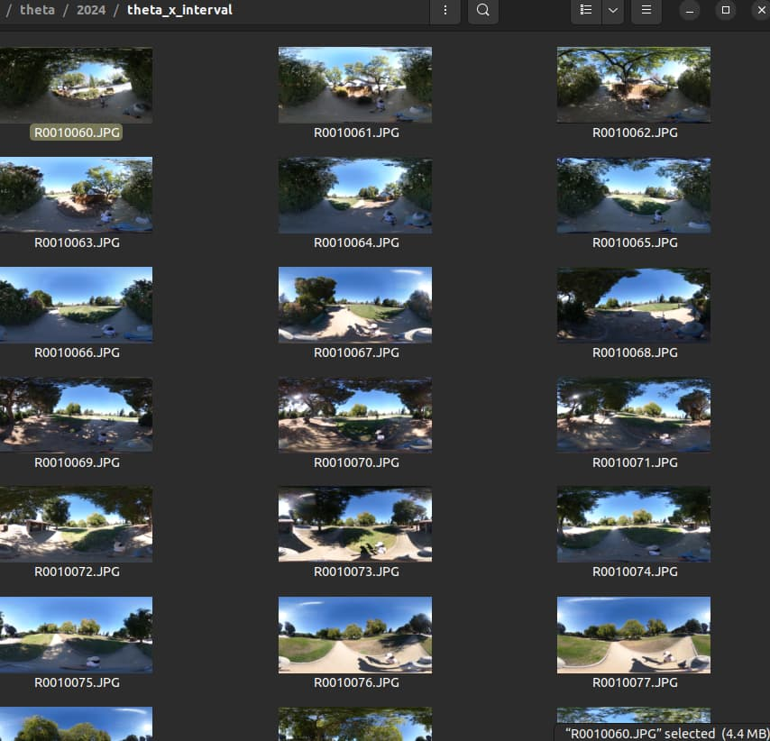
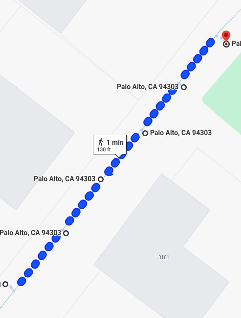
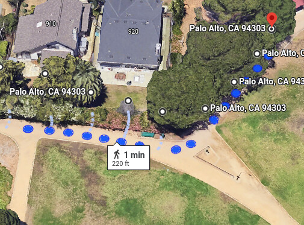
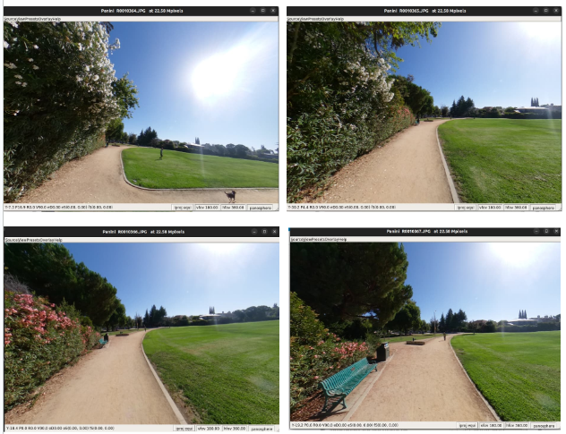

Sensor Data in Image Metadata

For still images, sensor data is stored in the metadata of the image.
Cameras have the following internal sensors:
- accelerometer
- gyroscope
- electronic compass
In addition, the THETA X has internal GPS.
The data is written into the image metadata and can be read and written with a number of free tools, including exiftool.
This is an example of the GPS data from the RICOH THETA X stored in Exif IFD format.

The example below shows shooting at 6 second intervals using the THETA X interval mode. The camera is mounted on a monopod and held overhead. A selfie-stick with a 1/4" mount on top will also work.

As a quick test of GPS accuracy, I used exiftool to extract the coordinates from the metadata and then plotted the image locations on Google Maps.

I also repeated the test with a Z1 using my mobile phone's GPS to embed the location into the image metadata.

Each location represents a full 360° scene.
